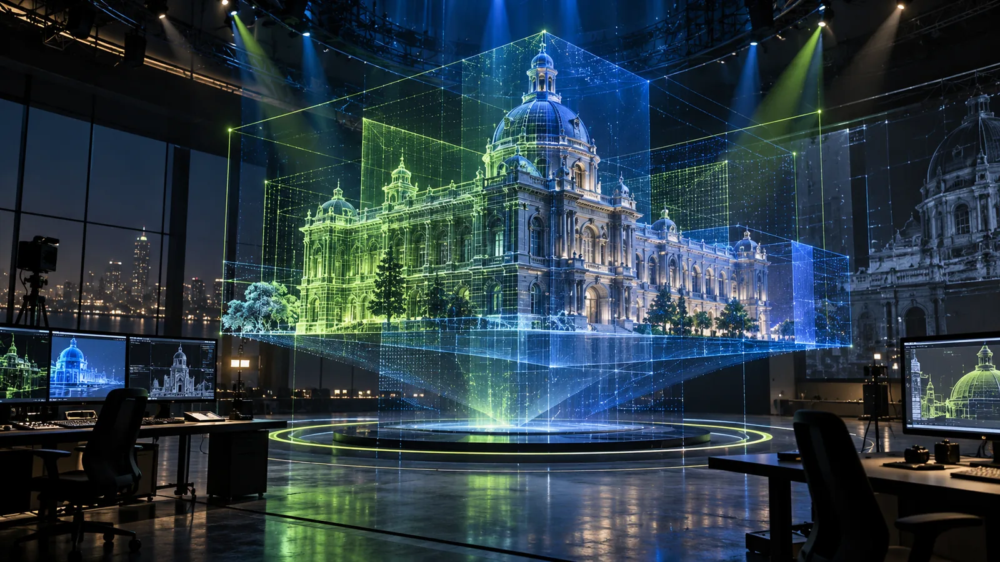
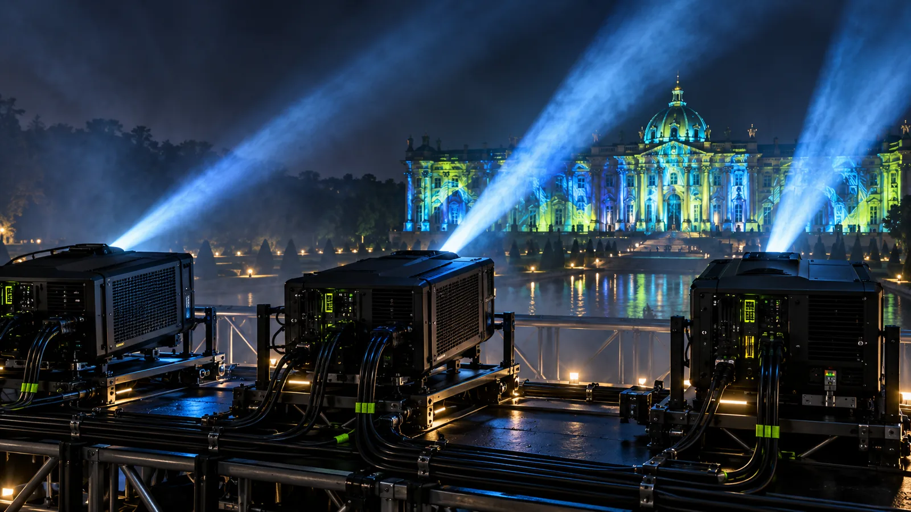

A practical previsualization workflow for projection mapping
Use a digital twin to test composition, coverage and audience views before arriving on site.

Use a digital twin to test composition, coverage and audience views before arriving on site. It covers what to model, how to place virtual projectors and audience cameras, and how to hand the model over to the team on site.
Build the right level of model
A previsualization model does not need every bolt. It needs accurate proportions, projection surfaces, depth changes and anything that blocks light or sightlines. Keep the model efficient enough for rapid iteration while preserving the features that affect creative and technical decisions.
Match real projector positions
Place virtual projectors using planned lens ratios, elevation and offsets. This reveals shadows, coverage gaps and severe viewing angles early. Use the same output aspect ratios and overlap logic expected in the media server.
Preview from the audience
A director's camera can make every scene look good, but the public will not stand there. Create cameras at representative audience positions, including the edges. Check whether important content is hidden, distorted or too small from those views.


Review representative scenes
Test typography, thin lines, faces, dark imagery and bright full-frame moments. These cases reveal different weaknesses. A realistic preview also helps clients understand why some designs will survive architectural scale better than others.
Keep colour expectations realistic
A monitor emits light directly while a projected surface reflects it. Previsualization should guide decisions, not promise an exact colour match. Include surface tone and ambient light in the model, then reserve final colour judgments for on-site tests.
Carry one coordinate system to site
Use consistent naming, scale and origins across the model, animation files and mapping system. Export approved cameras and guides with clear version labels. A clean handoff turns previsualization into a working production tool rather than a presentation that is discarded after approval.
Decide what the preview has to answer
A previsualization exists to settle questions before money is spent: does the projector plan cover the whole facade, which parts fall into shadow, which scenes read from the back of the crowd, and does the client understand what they are buying. Write those questions down at the start. A preview built to answer them can be modest; a preview built to impress tends to grow until nobody can change it quickly.
Use it to settle the projector plan
Coverage and overlap are where previsualization saves the most. Moving a virtual projector two metres costs nothing; moving a scaffold tower on site costs a night. Test the worst cases: the deepest recess, the highest cornice, the area behind trees or flagpoles. If a position depends on a roof or a neighbouring building, mark it as a risk until access is confirmed. The detail on lens choice is in choosing projector lenses and throw ratios.
Show clients a fair picture
Clients approve what they see, so the preview must not flatter the show. Render it at night with the surrounding light the site really has, from where the audience stands, at a realistic brightness. If the client sees a glowing perfect render, show night will disappoint even when it is good. If they see an honest one, show night will look better than the preview, which is the right way round.
Keep it alive until show week
Update the model when the survey changes, when a projector position moves or when the stage or crowd barrier is redrawn. On site, the same model is the reference for alignment: the crew compares what they see on the building with what the preview said they should see. That only works if the version on the laptop in show week is the latest one, which is why version control matters as much for the model as for the content.
Planning an immersive project?
Share the site, audience, date and creative ambition with AKS Creative Studio.
Start a conversation ↗